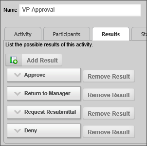
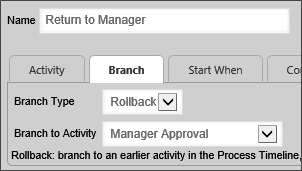
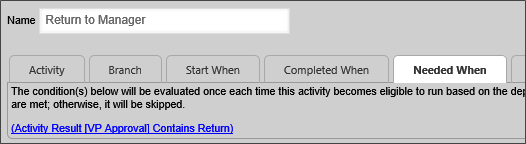

|
|
Lesson Contents | In this Lesson, you will learn the basics of timeline branching. |
Branching is a function that enables an activity to jump or branch to another activity in the running Process Timeline.
Unlike a traditional, flow-chart based workflow, the Process Timeline creates a critical path for a process by setting up a dependence hierarchy where completing Activity 1 starts Activity 2, completing Activity 2 starts Activity 3 and so on. In the normal course of events, a process is expected to run through the critical path to completion. Some processes, however, may need to skip some activities, or return to an earlier activity under certain conditions. While this need may be relatively rare, the Branching functionality enables you to meet this need when it arises.
There are three ways of branching to another timeline activity:
In Process Director, Branching is an older function that was implemented in earlier versions of the product. Since the introduction of Iteration, most of the use cases for Branching no longer apply. Iteration, however, does not eliminate Branching entirely, and, indeed, Branching can be a useful part of iteration.
For example, in a normal Iteration, it's very easy to set the looping condition to return a request to the initial submitter if anyone in the approval chain requests resubmittal, or to cancel the loop when any approver cancels the process. But, let's say that our approval process is a bit more complicated, like the example below:
| APPROVER | APPROVAL OPTIONS |
|---|---|
| Supervisor | Approve, Deny, Cancel |
| Manager | Approve, Deny, Cancel |
| Director | Approve, Deny, Cancel |
| Vice President | Approve, Deny, Cancel, Return to Director |
Notice that the Vice President has an additional approval option that can't be easily handled by Iteration, which is to send the request back a single step to the Director for further review. To handle this additional approval option, we can use a Rollback branch to send the request back to the Director when the Vice President selects that option.
The Sample Project for this training course implements a rollback within the approval iteration loop that operates in a fashion similar to the example given above. In the sample project, the VP Approval activity is followed by a Branch activity named Return to Manager, which rolls back the process to the Manager Approval activity under the appropriate conditions.
The Approvals loop is already configured to start from the beginning, at the Initiator Resubmittal activity, when any approver selects the Request Resubmittal result. All approvers have that result configured, along with Approve and Deny.
In the Results tab of the VP Approval activity, the activity has four possible results. In addition to the results available for other users, the VP also has a Return to Manager result.

The Return to Manager activity occurs after, and is dependent on, the VP Approval activity. In the Branch tab of the Return to Manager activity, the branch is configured to Rollback to the Manager Approval activity.

Finally, the Needed When tab of the Return to Manager activity has a condition set so that the Rollback only runs when the result of the VP Approval activity contains the word "Return".

If the VP chooses any result other than Return to Manager, the Approvals loop will process the result and restart, continue, or exit the loop, as appropriate. Otherwise, the Rollback will be called, and the process will be rolled back to the Manager Approval activity.